Logofolio
Logo explorations: personal projects where I experiment with marks, lettering and colour, then test each one on product mockups.
- Discipline
- Logo design
- Type
- Personal exploration
- Tools
- Illustrator, Photoshop

About these explorations
These are self-directed experiments rather than client briefs: a space to try out ideas with marks, lettering and colour.
To test whether each logo works, I placed it on mockups of real products, like packaging and apparel, and in two colourways.
Flutterblum
A logo mark and wordmark for Flutterblum, shown in its two colourways and on flower packaging.
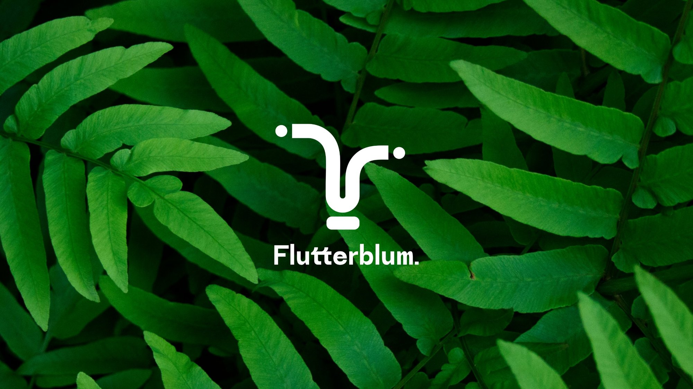
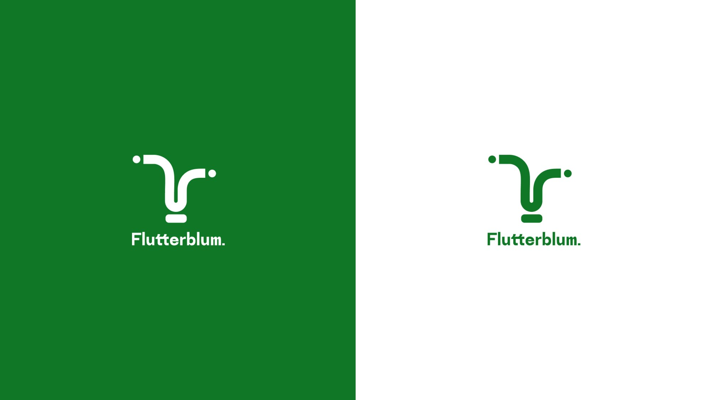
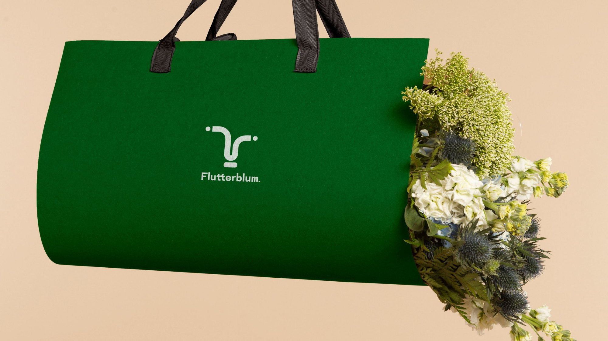
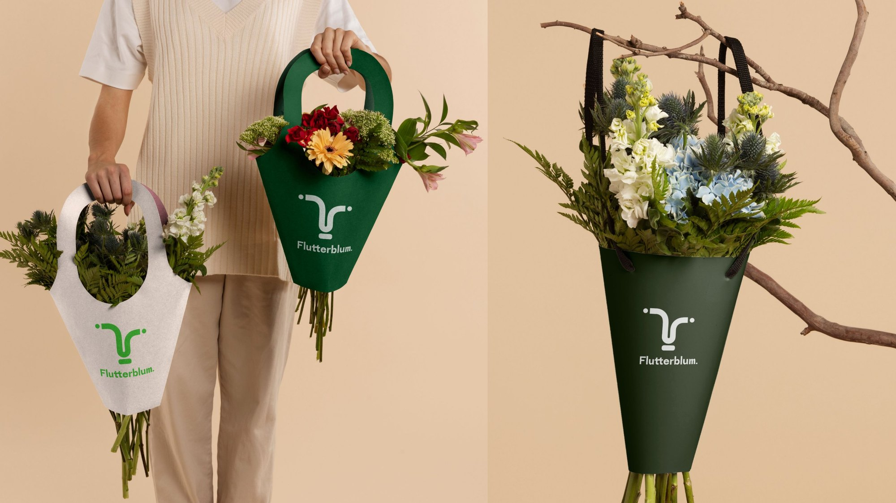
Rangers Fountain Club
A wordmark and an ★rfc★ monogram for Rangers Fountain Club, shown in its two colourways and on apparel.
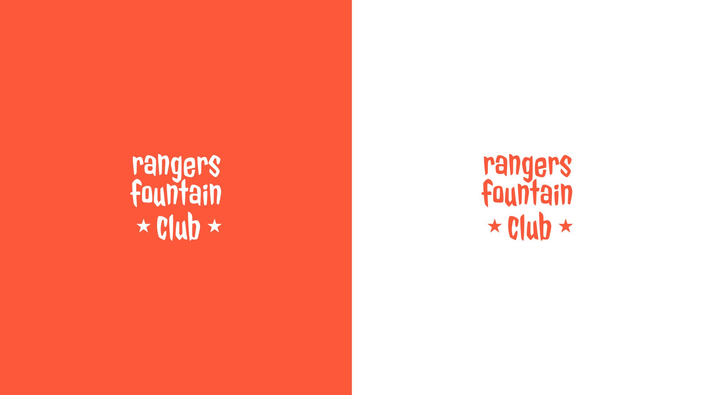
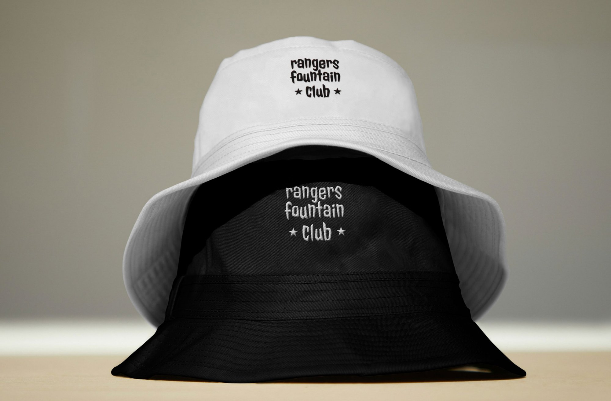
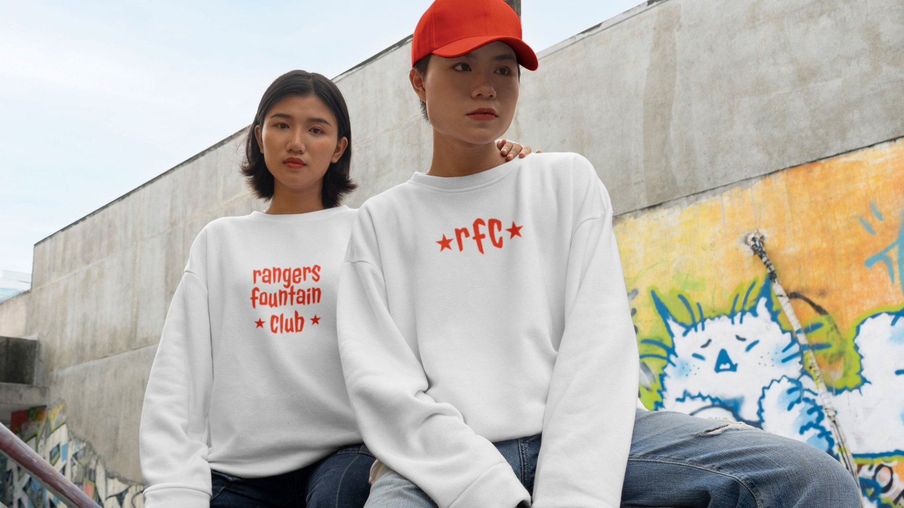
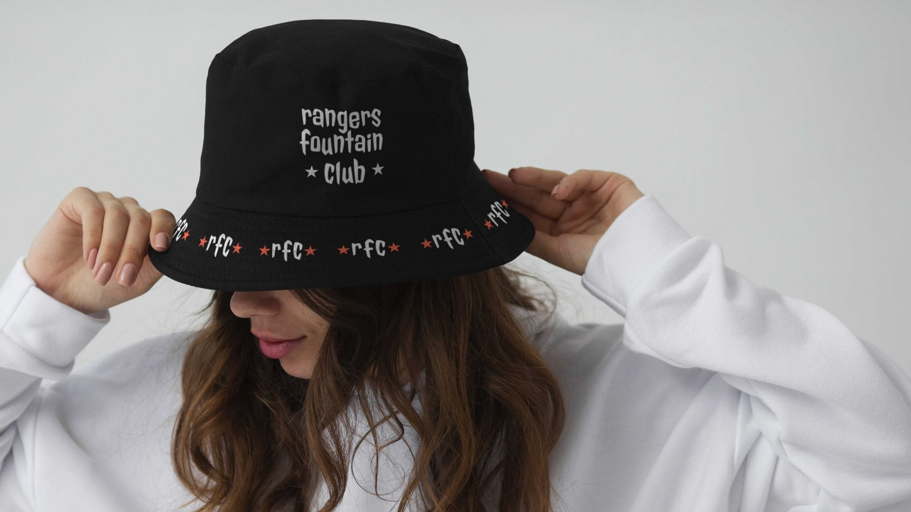
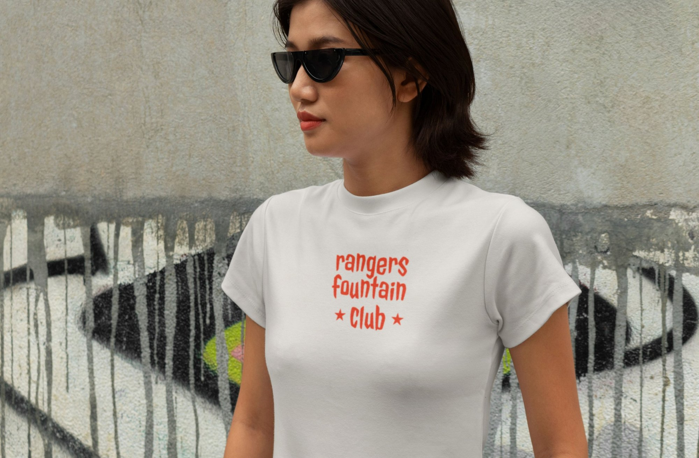
Quick Meal
A QM monogram and wordmark for Quick Meal, shown in its two colourways and on takeaway food packaging.
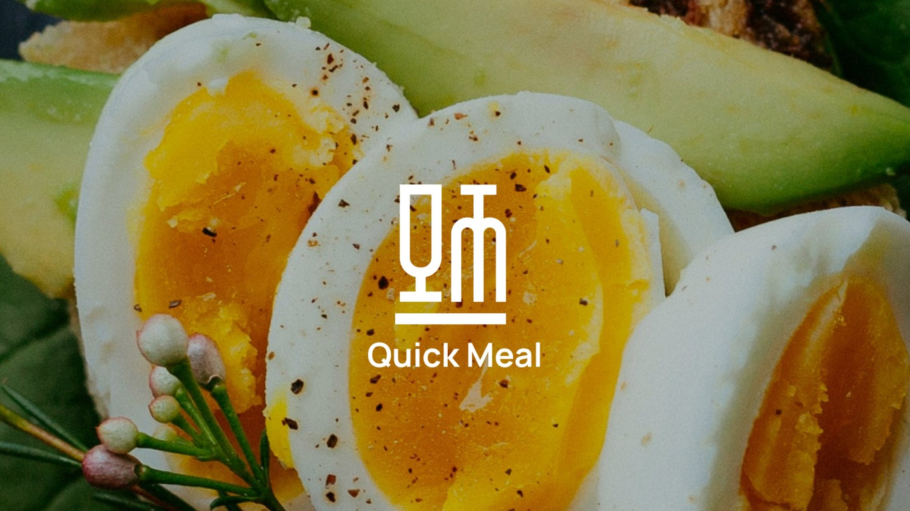
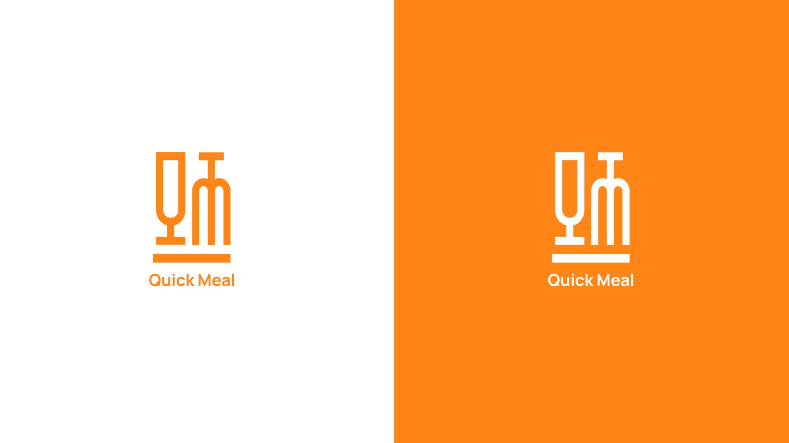
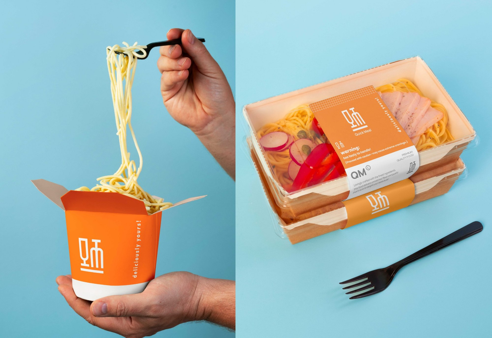
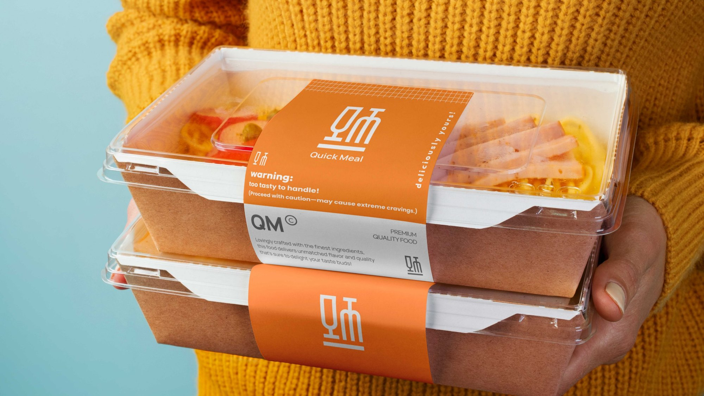